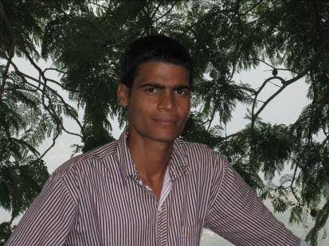

Success Stories
WINNERS AGAINST ALL ODDS
Deepika had all odds stacked against her growing up as a female child in a poor
household. Deepika's younger brother had the opportunity to attend school,
but she did not, because her family needed her to support the family. She
began working as a domestic servant at age of 7 and was on a trajectory to be
an illiterate domestic servant all her life. Then one day, a different turn came
about in her life when her brother heard about Vidya & Child and encouraged
her to join us..After completing the tenth grade, Deepika began a sales job at a
clothing store. She went on to pursue her education and became the first in her
family to attend college.
Deepika is currently in the second year of BBA and also supports her family by working at McDonalds.
Deepika is currently in the second year of BBA and also supports her family by working at McDonalds.
Deepika Mishra

Purnima
Purnima's family hails from Uttaranchal. Her father works in a bank and
their monthly family income is Rs. 6000. She is the eldest amongst 3 sisters.
One of her younger siblings studies in Class I at Vidya & Child. Purnima
joined Vidya & Child in the year 2006-07 in Nursery. Over the years, she has
made a mark for herself as a meticulous girl, a keen learner, an excellent
singer and an active member of our Music Programme. She wants to
become a teacher and pursue music as a profession too.
Sonu Gautam lost his father few years back which resulted in many financial
challenges at home. Sonu's mother has been exceptional in her support towards
the education of her children. Sonu has three sisters. Two of his sisters, Sunita and
Sangeeta , also studied with Vidya & Child. Both of them secured a seat in
engineering colleges in Noida. Hard work and sincerity is the corner stone of this
family. Sonu is a sharp child with good inclination towards Academics. He also
wants to get into Engineering after he finishes Class XII. He is currently in Class X in
Lord Mahavira School. He has been learning Tabla for a long time and has
participated in various performances. He was also a part of Robotics and
Electronics workshop under Creative Project.
Sonu Gautam
Deepak
Deepak's father works as a line man, Deepak is the eldest child in
the family and his younger siblings are studying in class V at Vidya
and Child and class VIII at Lord Mahavira School, Noida
respectively. Deepak has a keen interest in Physics and Chemistry.
Apart from academics, he is a regular participant of debates and
quiz competitions. He also loves to play volley ball and football
and has won a number of awards in intra-school Athletic Meets.
He has also taken part in theatre plays. He participated in Web Design Workshop and Photography Workshop under the Creative Project Programme. He aspires to become a software engineer. He is pursuing his class XI and is a part of FIITJEE program as he is preparing for engineering entrance tests.
He has also taken part in theatre plays. He participated in Web Design Workshop and Photography Workshop under the Creative Project Programme. He aspires to become a software engineer. He is pursuing his class XI and is a part of FIITJEE program as he is preparing for engineering entrance tests.
Manoj Nishad is a student of Class V at Vidya & Child. His father is a laborer
at a factory. He has 4 siblings i.e. three sisters and one brother. He comes
from an uneducated background and is a first generation learner. In the
past, he was a very shy student, but due to participation in the squash
program and involvements in creative activities, he has become a confident
child and aspires to become an army officer in future
Manoj Nishad
Sashmita Nayak
Sashmita is a role model for her younger siblings as well as other children of
Vidya & Child. The path to education for Sashmita and her three siblings has
been riddled with financial difficulties and anxious parents but that did not
deter her from pursuing her dreams. Sashmita, always a head girl in school, a
big support for her family, a brilliant anchor and a good dancer is living her
dreams.
Sashmita is currently in the first year of MBA in Event Management at NAEMD, Ahmedabad and is doing an internship with a Wedding Event Management Company called "Dreams Forever".
Sashmita is currently in the first year of MBA in Event Management at NAEMD, Ahmedabad and is doing an internship with a Wedding Event Management Company called "Dreams Forever".
Suraj has been a consistent rank holder since his school days. A
self motivated person and a brilliant student, he was always clear
that engineering is what he would want to pursue. Besides
academics, Suraj plays excellent tabla and has performed at all
Vidya & Child events.
Suraj is in his 2nd year of Computer Engineering at NIT, Trichy
Suraj is in his 2nd year of Computer Engineering at NIT, Trichy
Suraj Nayak
Each of our 1500+ children have dreams and are working very hard to achieve them despite
all hardships and challenges. Their lives are an inspiration and a great source of strength for
us and fuel us with all the energy that we need to pursue our efforts relentlessly.
Foundation Programme - Outcome
At Vidya & Child, each child is given the opportunity to explore and understand oneself and decide for a suitable career with the help of mentors and career counselors. The approach, therefore is not vocation centric but child-centric.
Devi Shankar
(pursuing Hotel Management from
IHM, Lucknow)
Sunita Gautam
(pursuing Engineering in
Computer Science from
Jaypee Institute of
Information Technology, Noida)
Seema Biswal
(finished graduation and working in a
Pvt. Ltd. Company)

Pramila Mandal
(pursuing a course in
Cosmetology at VLCC, Noida)
Careers pursued by children of V&C
- Engineering
- Event Management
- Hotel Management
- Business Administration
- Cosmetology
- Social Work
- Fine Arts
- Chartered Accountancy
- Nursery Teachers Training
- BPO sector
- Retail sector
- Human Resource Management
- Animation
- Health & Fitness
Radha Mishra
(pursuing BSW from IGNOU & working
with Magic Bus)

Dilip Mishra
(working with OISCA and
pursuing BSW from IGNOU)
Dilip Mishra
(working with OISCA and
pursuing BSW from IGNOU)